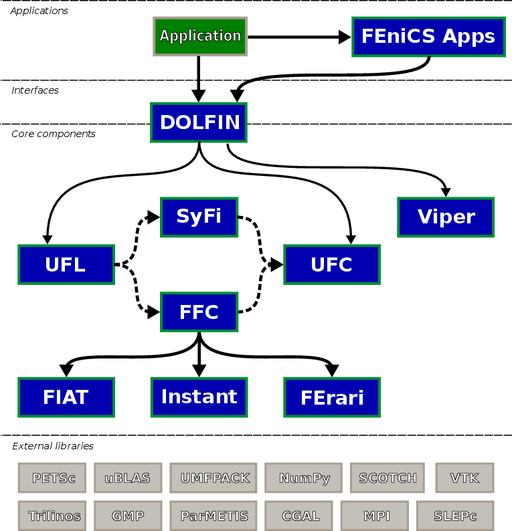

The FEniCS Project is a collaborative project for the development of innovative concepts and tools for automated scientific computing, with a particular focus on automated solution of differential equations by finite element methods.
The methodology and software developed as part of the FEniCS Project are documented in a number of research articles and a book. You can also learn more about FEniCS from the following presentations.
FEniCS has an extensive list of features for automated, efficient solution of differential equations, including automated solution of variational problems, automated error control and adaptivity, a comprehensive library of finite elements, high performance linear algebra and many more.
FEniCS is organized as a collection of interoperable components that together form the FEniCS Project. These components include the problem-solving environment DOLFIN, the form compiler FFC, the finite element tabulator FIAT, the just-in-time compiler Instant, the code generation interface UFC, the form language UFL and a range of additional components.
Building on these components, software specialized to solving different problems are organised into separate applications.
The FEniCS Project is developed by researchers from a number of research institutes from around the world. The following research institutes (in alphabetical order) contribute to the FEniCS Project:
Contributions have also been made by researchers from Delft University of Technology, Argonne National Laboratory and many other research institutes. A full list of contributors is maintained as part of the source code of each FEniCS component.
The following video illustrates the development of the FEniCS Project since its inception in 2003.
All FEniCS core components are licensed under the GNU LGPL as published by the Free Software Foundation, either version 3 of the license, or (at your option) any later version.
All other FEniCS components are licensed under either the GNU GPL or the GNU LGPL, either version 3 of the license, or (at your option) any later version.
Authors and institutions have given their consent to licensing under these terms.
These pages have been created by the FEniCS Team with the help of Mattias Schläger who designed the graphical profile. The pages are built using the Sphinx documentation system in combination with some homebrew scripting (for extraction of C++ documentation in particular). The sources for these pages are maintained on Bitbucket. Comments and bug reports are welcome as always. If you find something is in error or missing, please file a bug report on Bitbucket.